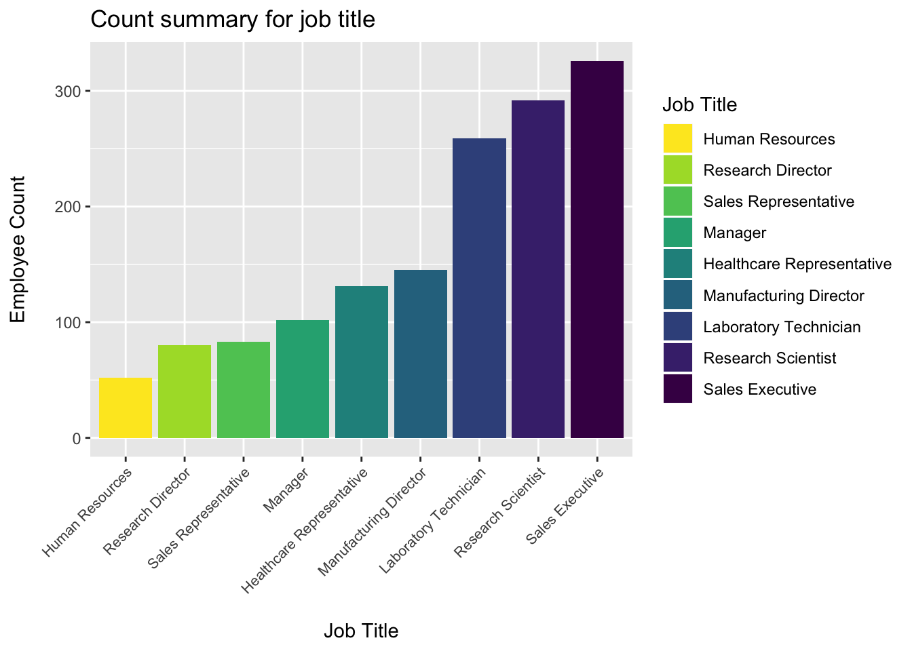
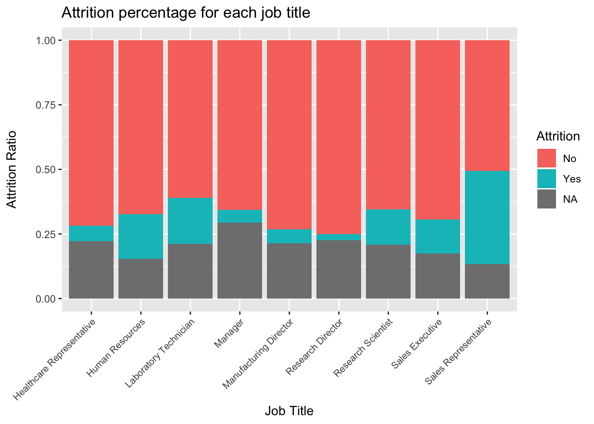
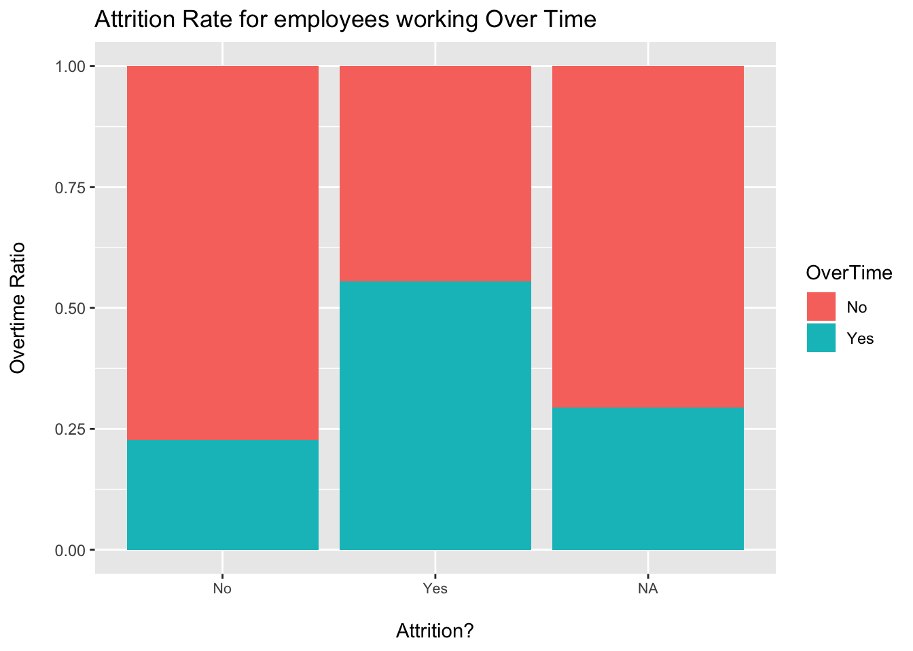
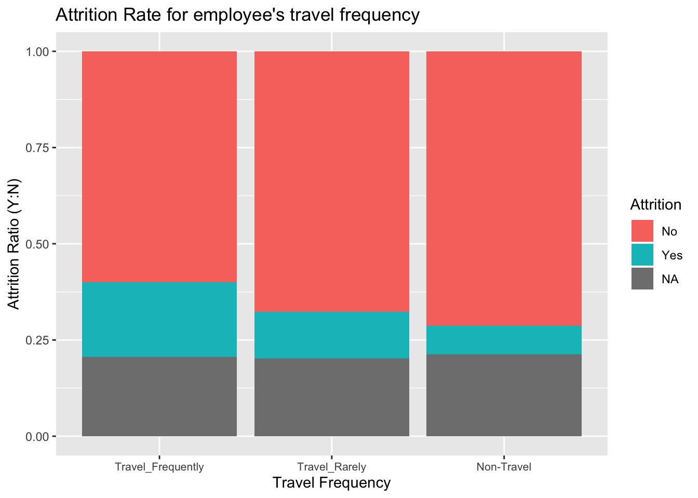
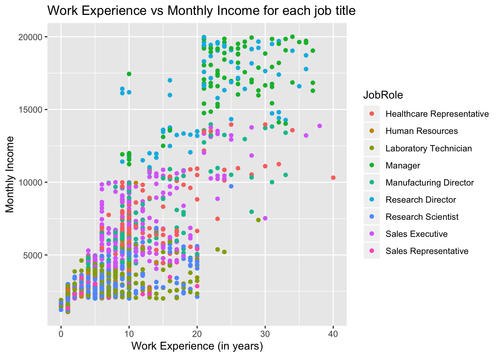
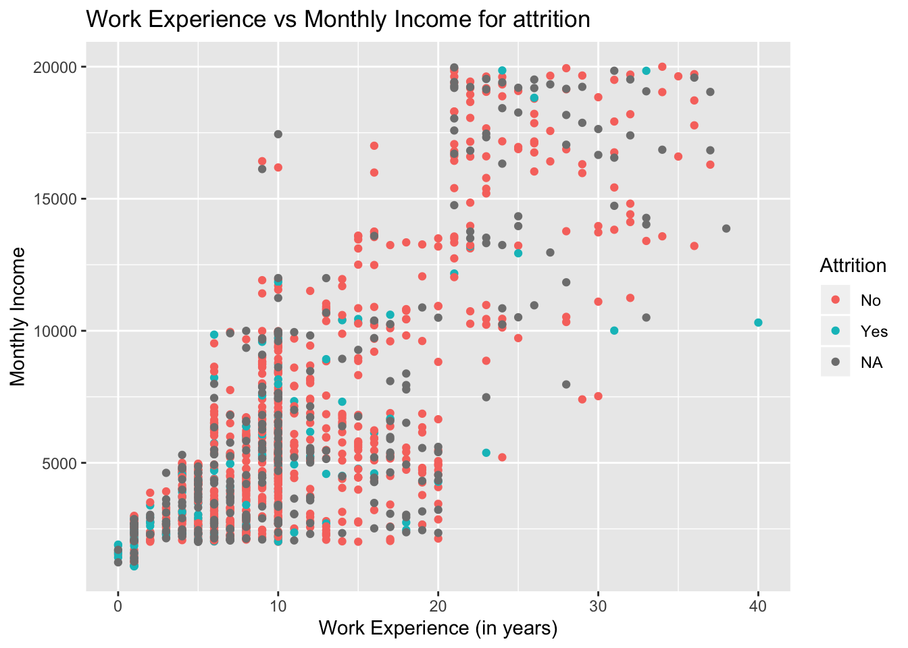
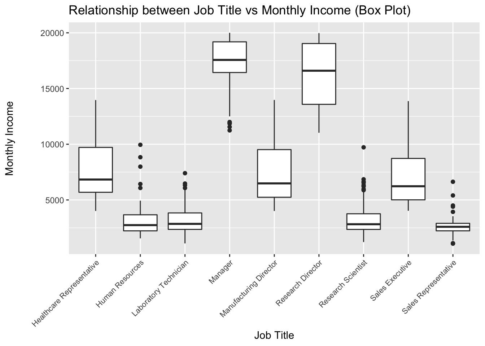
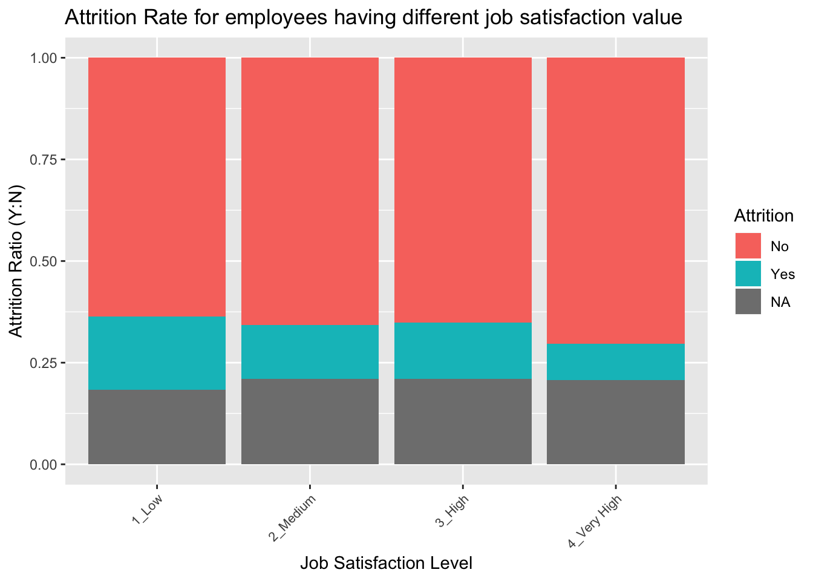
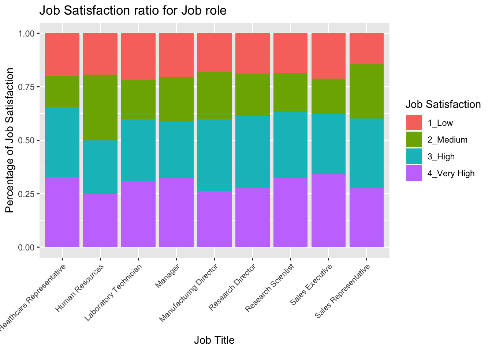

This report is to analyse data for existing employees of a company to find the reason of employee turnovers. Also, we will talk about interesting trends that we see in employee data.

The below graph clearly states that turnver rate is high for Sales Representatives.

The below graph is indicating that attrition rate is high for lower income groups (especially for employees earning less than 5000 per month. As employees move to high income group, they tend to stay.
Working overtime plays an important role in employee turnover. As you can see from the below chart, more than 55% of the employees who fall under Attrition = Yes category worked overtime.

People who travel more for work tend to leave the company.

Below bar graph is an indicator of increasing monthly income with more experience. So, there is a positive co-relation. Employees with more work experience becomes Manager or Directors.


Job Satisfaction should be an ideal parameter for attrition rate. But as you can see from the below diagram, job satisfaction is not having a high impact on the attrition rate of this company. However, people with high job satisfcation value tend to stay back.

## No Yes
## [1,] 0.2554407 0.7445593## [1] 1In my opinion, attrition is directly dependent on low income, working over time and more work related travel.
The posterior probability says, the attrition rate would be high for those employees who are in low income group (like Sales Representative) doing overtime and who Travel frequently.
We have a presentation of this report in https://youtu.be/c8dK0_q4g3I